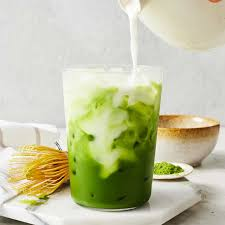

Matcha Latte
Home Page

Ingredients
- Matcha Powder
- Oat Milk
- Vanilla Syrup
- Love and Care
How to Make a Matcha Latte
- Take 1 teaspoon of matcha powder and add it to your mixing bowl
- Using a whisk or a matcha whisk, add a small bit of warm water and whisk together until a consistent frothy paste
- If hot: use a frother and mix oat milk until frothy.
- If cold, froth from fridge
- Add in syrup to milk. Add frothed matcha on top
- Enjoy!